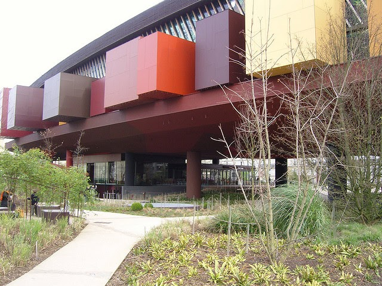

Séance 1: Problématique
Problématique
Situation déclanchante:

Nous sommes une équipe d'architectes réputée dans toute l'Aquitaine.
Nous sommes spécialisés dans la rénovation, la création de logements ou de bâtiments pour les particuliers et les entreprises.
Nous intégrons les contraintes de développement durable dans toutes nos constructions.
Que se passe-t-il?
En ilot rédigez un texte présentant la situation.
Coup de pouce:
Ce qui dit doit être repéré...
le lieu, les personnes concernées, le problème à résoudre.
Quel est le problème à résoudre ?
Réponse:
Comment améliorer le logement des étudiants ?
Quelles sont vos hypothèses pour résoudre le problème ?
Réponse:
Augmenter rapidement le nombre de logements pour les étudiants, particulièrement dans les grandes villes.
Créer un logement individuel, de petite taille adapté à un étudiant et à un prix abordable.
🧠 Teste tes connaissances
Réponds aux questions puis clique sur « Vérifier » — la correction s'affiche aussitôt.
1. Dans quelle région l'équipe d'architectes de la situation déclenchante est-elle réputée ?
2. Quel est le problème à résoudre retenu dans cette séance ?
3. Selon les hypothèses retenues, quel type de logement faut-il créer pour un étudiant ?